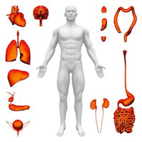

The organs.
Vision statement
The vision for the Institute of Metabolomic Medicine is
the mapping of the human metabotype in normal and disease
states to redefine the disease phenotype for improved diagnosis
and monitoring as well as to identify novel targeted treatments
with improved specificity for individual patients.
News
Seminar by
Dr. Theodore Alexandrov: Jan. 27, 2016 14:00 - 15:00 Stein Building Room 344A/B.
Dr. Theodore Alexandrov is the professor at the European Molecular Biology Lab at Heidelberg,
Germany and an expert in Imaging Mass Spec on Tissue Samples.